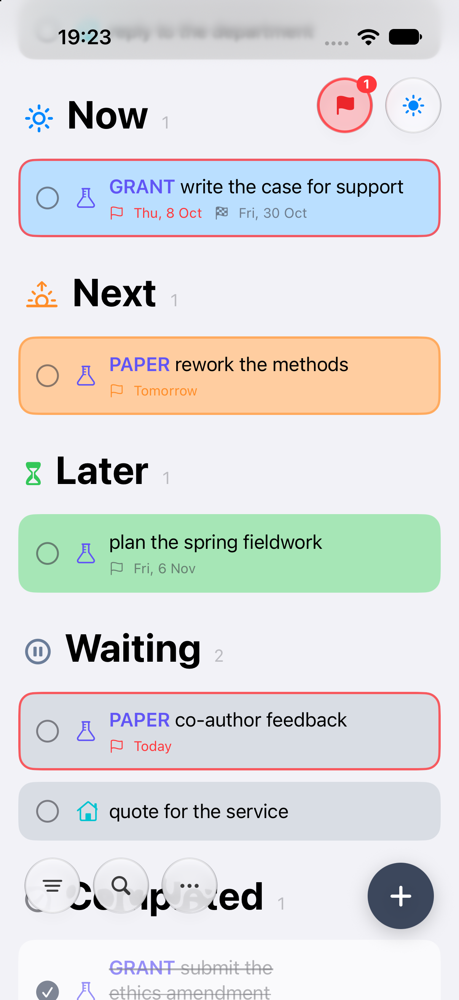
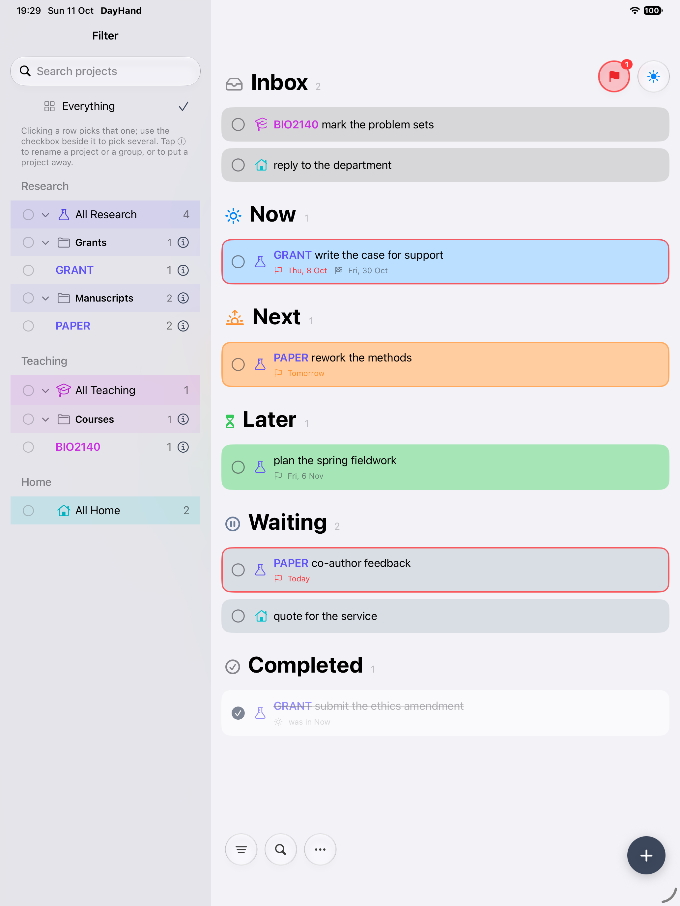

모든 할 일에 알맞은 자리를
칸반에서 영감을 얻은 DayHand는 카드와 스택의 단순함을 삶과 일의 관리에 가져옵니다. 스택은 달력의 날짜가 아니라, 그 할 일이 지금 내 삶의 어디에 속하는지를 나타냅니다.
수신함
어떻게 할지 정하기 전에 먼저 할 일을 적어 둡니다. 새 할 일은 보통 여기에 들어오며, 시간이 날 때 분류하면 됩니다. 어디에 속하는지 이미 안다면 추가할 때 다른 스택을 고르세요.
지금
지금 적극적으로 하고 있는 일입니다. 할 일을 진행하는 동안 며칠이나 몇 주 동안 여기에 둘 수 있습니다. “지금”는 진행 중이라는 뜻이며, 오늘 모든 것을 끝내겠다는 약속이 아닙니다.
다음
여유가 생기면 다음에 손댈 일입니다. 다음 단계를 내일로 배정하거나 이미 진행 중인 일과 경쟁시키지 않고도 눈에 보이는 곳에 둘 수 있습니다.
나중에
나중을 위해 간직하고 싶은 아이디어, 계획, 할 일입니다. 아직은 하지 않기로 했지만, 준비될 때까지 머물 자리가 있습니다.
대기 중
답변, 배송, 누군가의 의견 등 무언가가 올 때까지 진행할 수 없는 일입니다. 진행 중인 일과 분리해 두었다가, 다시 움직일 수 있게 되면 어디에 둘지 정하세요.
할 일을 언제 옮길지는 여러분이 정합니다. 시간이 지나도 스택은 바뀌지 않습니다. 일이 끝나면 체크하세요. 그러면 “완료됨”로 이동합니다.
목적이 있는 날짜
대부분의 할 일에는 날짜가 필요 없습니다. 날짜가 중요할 때는 그 할 일을 생각하고 싶은 때와 정말 끝내야 하는 때를 구분하세요.
미리 알림: 언제 떠올릴지
할 일을 다시 떠올릴 날을 고르세요. 작업을 시작하거나, 아이디어를 다시 생각하거나, “대기 중”에 있는 일을 재촉할 때 쓸 수 있습니다. 알림과 색깔 테두리가 알아차리도록 도와줍니다. 계획이 바뀌면 미리 알림을 변경하거나 지우세요. 할 일은 둔 자리에 그대로 있습니다.
마감일: 언제까지 끝내야 하는지
제출, 갱신, 납품처럼 실제 약속이 있다면 미리 알림과 함께 선택 사항인 마감일을 추가하세요. 마감일은 종료일로 할 일에 표시됩니다. 알림과 색깔 테두리는 미리 알림이 맡으며, 마감일이 별도의 알림을 보내거나 할 일을 옮기지는 않습니다.
어느 날짜도 스택을 고르거나, 할 일을 옮기거나, 완료로 표시하지 않습니다. 할 일은 월요일에 미리 알림, 금요일에 마감일을 둔 채로 한 주 내내 “지금”에 있을 수 있습니다.
할 일 하나의 여정
금요일까지 발표를 준비해 달라는 요청을 받았습니다. 우선순위가 바뀌고 작업에 며칠이 걸려도 이것은 하나의 할 일입니다.
- 월요일“발표 준비”를 적고, 화요일에 시작하도록 미리 알림을, 금요일을 마감일로 지정합니다. 수신함
- 화요일미리 알림이 할 일을 다시 떠올리게 해 줍니다. 시작하기로 하고 “지금”로 옮깁니다. 지금
- 그날 나중에더 급한 일이 생겼습니다. 발표는 잠시 미뤄 두고 수요일에 미리 알림을 설정합니다. 나중에
- 수요일미리 알림이 다시 시작하라고 알려 줍니다. “지금”로 되돌려 같은 할 일을 이어서 합니다. 지금
- 목요일초안을 동료에게 보냅니다. 끝내려면 동료의 의견이 필요하므로 금요일에 재촉할 미리 알림을 설정합니다. 대기 중
- 금요일미리 알림이 오면 재촉합니다. 의견이 도착하면 마지막 수정을 위해 할 일을 “지금”로 옮깁니다. 지금
- 완료금요일에 발표를 마치고 할 일을 체크합니다. 마감을 지켰습니다. 완료됨
처음부터 끝까지 할 일은 하나였습니다. 금요일 마감은 한 번도 바뀌지 않았습니다. 미리 알림이 할 일을 다시 떠올리게 해 주었고, 언제 옮길지는 여러분이 골랐습니다. 중간의 멈춤과 체크하지 않은 날들도 일을 해내는 과정의 일부였습니다.
관련된 일을 한곳에
공통의 목적을 위한 프로젝트
여행, 강의, 고객, 하나의 작업에 속한 할 일을 한곳에 모아 둡니다. 휴가 같은 이름으로 할 일을 시작하면 입력란 아래에 제안되는 프로젝트를 선택하거나, 프로젝트 버튼에서 고르세요. 할 일마다 프로젝트를 하나 둘 수 있으며, 색깔 접두어로 표시됩니다.
삶의 영역을 나누는 카테고리
업무, 집, 강의처럼 큰 영역을 직접 만든 레이블, 아이콘, 색상으로 구분하세요. 프로젝트는 그 할 일에 시작 카테고리를 제공합니다. 프로젝트에 넣지 않고 할 일에 카테고리만 지정할 수도 있습니다.
관련 프로젝트를 위한 그룹
프로젝트를 고객, 강의, 휴가 같은 그룹으로 모으세요. 이름 변경과 재정리는 필터에서 합니다. 프로젝트가 끝나면 보관하고, 할 일은 참고용으로 남겨 둘 수 있습니다.
집중할 것 찾기
할 일 제목, 프로젝트 이름, 그룹 이름을 검색합니다. 카테고리와 프로젝트를 자유롭게 조합해 필터링하거나 그룹 전체를 고를 수 있습니다. 열린 할 일이 있는 프로젝트, 모든 활성 프로젝트, 돌아보고 싶을 때는 보관된 프로젝트를 표시하세요.
시간이 지나며 이룬 것을 보기
해야 할 일의 목록은 전체 그림의 일부일 뿐입니다. DayHand는 끝낸 일의 기록도 남깁니다.
이번 주와 지난주
완료한 할 일을 끝낸 날짜별로 묶어 살펴보세요. 이번 주에 해낸 일을 보거나, 다음에 무엇을 할지 정하기 전에 지난주를 돌아볼 수 있습니다.
더 긴 시야로
전체 완료 타임라인을 월과 일 단위로 훑어보거나, 프로젝트의 기록을 열어 끝낸 일을 확인하세요. 일별 개수와 간단한 막대가 완료의 흐름을 한눈에 보여 줍니다.
완료한 할 일은 “완료됨” 스택에 남아 있으므로 다시 찾거나, 한 번 더 손봐야 하는 일을 다시 열 수 있습니다.
모든 기기에서 하나의 앱
처음부터 iPhone, iPad, Mac을 위해 만들었습니다. 모든 Apple 기기에서 같은 할 일로 작업하며, 각 화면에 맞는 일관된 경험을 제공합니다.


영어로 표시된 베타 화면 예시입니다. 현재 버전에서는 레이아웃과 컨트롤이 다를 수 있습니다.
삶과 일을 위해
건축가
진행 중인 도면은 “지금”, 다음 수정은 “다음”, 나중 아이디어는 “나중에”에. 고객에게 보낸 도면 세트는 의견이 올 때까지 “대기 중”으로. 재촉할 미리 알림과 실제 제출일의 마감일을 둡니다.
조경업자
모양을 갖춰 가는 정원은 “지금”, 다음 현장 방문은 “다음”, 앞으로의 식재 계획은 “나중에”에. 자재나 고객의 승인을 기다리는 작업은 “대기 중”으로. 재촉할 미리 알림과 약속한 인도일의 마감일을 설정합니다.
학생
과제, 복습, 일상의 책임 사이에서 균형을 잡으세요. 강의별 할 일은 각자의 프로젝트에 두고, “지금”의 일에 집중하며, 실제 제출일을 마감일로 쓰세요. 팀원의 몫을 기다리는 조별 과제는 “대기 중”으로.
연구자
분석과 집필은 “지금”에 두고, 공저자에게 넘긴 원고나 데이터를 기다리는 실험은 “대기 중”에 둡니다. 관련된 연구와 연구비를 그룹으로 묶고, 프로젝트 기록으로 지금까지 끝낸 일을 돌아보세요.
웹 개발자
하나의 기능은 며칠 동안 “지금”에 있을 수 있고, 그다음 기능은 “다음”, 백로그는 “나중에”에 둡니다. API 키나 고객 의견 때문에 막힌 작업은 “대기 중”으로. 할 일을 계속 재조정하지 않고도 출시 마감일을 유지하세요.
집과 가족
보험 정리는 “지금”, 건강검진 예약은 “다음”, 휴가 아이디어는 “나중에”에. 기술자의 견적을 기다리는 수리는 “대기 중”으로. 재촉할 미리 알림을 설정하고, 실제 갱신일을 마감일로 두세요.
할 일은 여러분의 것입니다
DayHand 계정도 서버도 없습니다
DayHand는 여러분의 기기와 여러분의 iCloud Drive에 할 일을 저장하고 동기화합니다. 만들어야 하는 DayHand 계정도, 데이터를 보관하는 DayHand 서버도 없습니다.
설계에 녹아 있는 동기화
여러분의 iCloud Drive에 있는 공유 파일이 iPhone, iPad, Mac의 할 일을 동기화합니다. 각 기기에서 같은 파일을 한 번만 선택하면 어디서든 할 일을 다룰 수 있습니다. iCloud Drive가 기기를 연결하므로 별도의 DayHand 서비스가 필요 없습니다.
백업과 빠져나갈 길
앱을 여는 날에 자동 백업이 만들어지며, 세 개의 사본이 돌아가며 보관됩니다. 직접 백업을 추가하거나, 이전 사본을 복원하거나, 더 안전한 곳으로 공유할 수 있습니다. CSV 가져오기와 내보내기로 할 일을 들여오거나 가져갈 수 있습니다.
DayHand 베타 사용해 보기
iPhone, iPad, Mac용으로 Apple의 TestFlight를 통해 제공됩니다.
iPhone 및 iPad
iOS / iPadOS 17 이상
- App Store에서 Apple의 TestFlight를 설치합니다.
- iPhone 또는 iPad에서 아래의 베타 링크를 엽니다.
- 초대를 수락하고 DayHand를 설치합니다.
Mac
macOS 14 이상
- Mac App Store에서 TestFlight를 설치합니다.
- Mac에서 아래의 같은 베타 링크를 엽니다.
- 초대를 수락하고 DayHand를 설치합니다.
직접 빌드한 이전 Mac 버전에서 옮겨 오셨나요?
TestFlight 앱은 데이터를 다른 위치에 저장합니다. 할 일이 없는 상태로 열리더라도 이전 파일은 원래 있던 곳에 그대로 있습니다. iCloud Drive로 동기화하고 있었다면 더 보기 → 기존 동기화 파일 사용을(를) 열고 같은 파일을 다시 선택해 할 일을 되살리세요.